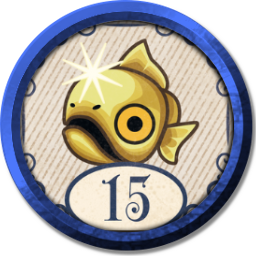
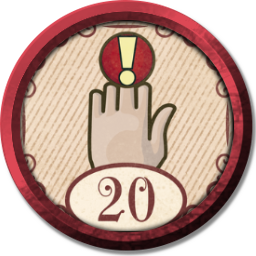

Graduate del Gremio de Héroes para convertirte en un verdadero héroe.
Hazte un Hombre
Visita la Granja Huerto para ver si puedes ser de ayuda o un obstáculo.
Tan Silencioso como un Susurro
Derrota a Whisper en una batalla sin perder salud (hay algunos hechizos que te pueden resultar util para esto).
Héroe, su salud es baja
Cura a un seguidor en una misión de escolta.
El Héroe del Tiempo
Come un pez luna en Bowerstone durante el día, o una zanahoria dorada por la noche.
Ass Creed
Cuando te vistas como un asesino , sé silencioso pero letal (tirate un pedo).
Sacatelo del Pecho
¡Abre tu primer cofre de llave plateada para revelar la increíble sorpresa que contiene dentro!
El linaje parte I
Encuentra el paradero de tu hermana , ella es muy importante para el futuro de Albion.

¡Eso es un Auténtico pedo!
Gana el 1.er premio en la competición de pescadores o completa el logro haciendo cualquier misión desnudo.
Proyecto Ego
Muestra a todos los testigos disponibles un trofeo en el minijuego de trofeos o decora tu casa con un trofeo.
Alimenta al Troll
Dale a un troll un poco de su propia medicina.
Bajo la luna llena
Algo está pasando en Knothole Glade bajo la luna llena. ¿Un cliché? Jamás.
La cola del Invocador
Invoca una criatura poderosa para que luche a tu lado (mientras cazas a tu primer Balverino Blanco y veas que le queda poca vida usa tu invocación para dar el ultimo golpe).
¡Gladiador, Listo!
Enfréntate al poder de todo lo que Albion tiene para ofrecer. Bueno, casi todo... (gana la Arena)
Relaciones Matrimoniales
Recibe un regalo de tu cónyuge o coquetea con un admirador delante de tu cónyuge.
La Espada Oscilante
Golpea a 3 enemigos simultáneamente con un solo golpe como si fueras un verdadero golpeador.
¿No estás entretenido?
Completa las 8 rondas de la Arena sin tomar un descanso.
Combate, Evolucionado
Usa una poción "Edades de..." con un multiplicador de combate de 20 o más(un buen momento para hacerlo es en la Arena o el Cementerio).
Un Amigo de la Familia
Rescata al arqueólogo y encuentra la entrada secreta a la prisión de Bargate.
Pescando en un Cementerio
Ve a pescar y a cavar en un cementerio , como si fuera algo completamente normal de hacer.
Lucha Cluck
Conviértete en el campeón mundial de luchadores de puño o gana el sombrero de pollo en la competencia de patadas de pollo.
¿Qué estás Vendiendo?
Obtén ganancias vendiéndole a un comerciante o roba un artículo usando la expresión "Robar" de un comerciante.
El Linaje parte II
Ahora es tu madre la que ha desaparecido , así que es hora de encontrarla también. Familia, ¿quién la necesita?
Pero eres un Mago, Héroe
Aprende uno de cada tipo de hechizo o posee uno de cada tipo de arma .
Por cada Elección, un Logro
¡Hazte más santo que Avo o más malvado que Skorm!(maximiza tu alineamiento bueno o malo).
La Bella o la Bestia
Alcanza el máximo de tu atractivo elegido: ¡feo o bello!
Siempre hay un Faro
¿Sería tan amable de liberar a Albion de su mayor traidor?(derrota a Maze).
El Juego de Beber
Bebe hasta vomitar o “ayuda” a un aldeano amigable a emborracharse.
Hazte Rico o Muere en el Intento
Gana 10 000 de oro alquilando una propiedad o muere.
No hay Cuchara
Usa el poder del control mental en un enemigo y haz que mate a uno de sus aliados.
Aparece un Gato Salvaje
Desde el Vacío hasta el Gremio, es hora de luchar contra el gran villano.
Soy Legendario
Gana suficiente renombre para ser conocido en Albion como "Legendario".
Se Acerca el Invierno
Viaja a las Tierras Desoladas del Norte, porque parece ser el lugar perfecto para visitar.
¡Ese es mi Hombre!
Sube de nivel un árbol de habilidades completo, ya sea Fuerza, Habilidad o Voluntad.
Modo Horda
Algunas armas son legendarias y creemos que vale la pena recolectar al menos 10 de ellas.
De la Sartén...
... ¡En tu cara! Expresa tus sentimientos a través de la sartén (encuentra el tesoro de la Grasnja Huerto)
El Guerrero Definitivo
Regálate una barba, un corte de pelo y un tatuaje, la 'Toupée And Tattoo Society' lo exige.
Definitivamente no Sobre Rieles
Visita todas las regiones (excluyendo las Puertas Demoniacas) o aumenta tu cintura para no tener que hacerlo.
¿Me estas Escuchando?
Pocas cosas son más inteligentes en Albion que una puerta de piedra parlante, así que imagina una puerta que conoce la YMCA.
Eres un Superjugador
Encuentra las 30 llaves de plata . En otras noticias, ¡la guía de estrategia del aniversario de Fable ya está disponible!

Abrir Saysamhemiddlefinger
Abre todas las Puertas Demoniacas o muéstrale a una Puerta Demoniaca cerrada lo que piensas de ella.
Tomando Decisiones Difíciles
Detrás de la Puerta de Bronce se encuentra tu destino, y todo lo que necesita es la muerte de tus aliados más cercanos.
Héroes de la Fábula
¡El profesor Bowerstone está buscando muñecos de héroe, ayúdalo a encontrarlos!(juega a los minijuegos de las tabernas).
La Educación Gobierna la Nación
¡Los niños de Bowerstone no tienen libros para leer! No querrás niños analfabetos, ¿verdad?(entrega todos los libros)
Hice esto para un Cheevo
Realiza un tiro a la cabeza con una ballesta mientras estás vestido como una mujer con barba y una peluca pelirroja.
Eligiendo mi Religión
Dona un total de 100.000 de oro al Templo de Avo o sacrifica a 10 personas a la Capilla de Skorm.
¿Arthur o Robin?
Saca la espada de la piedra o gana el máximo premio en la competición de tiro con arco.
(#SPOILERS)
Es hora de derrotar al súper increíble jefe, el que verás si desbloqueas este logro.
Grandes Bolas de Fuego
Completa una verdadera hazaña heroica (pasate el juego en Heroico).